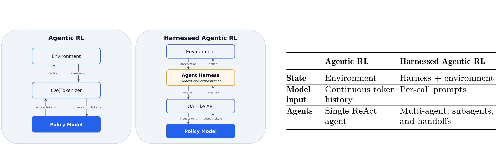
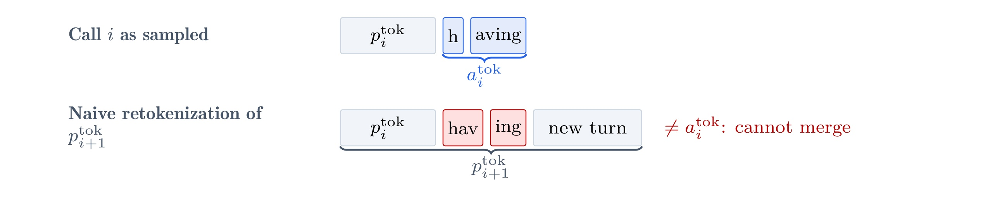
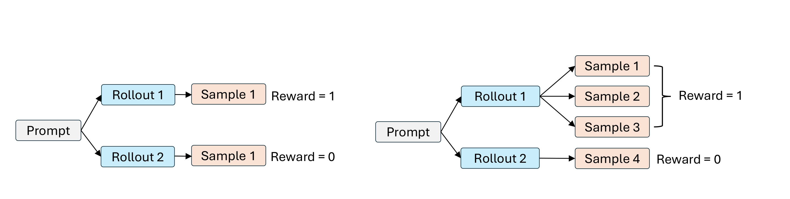
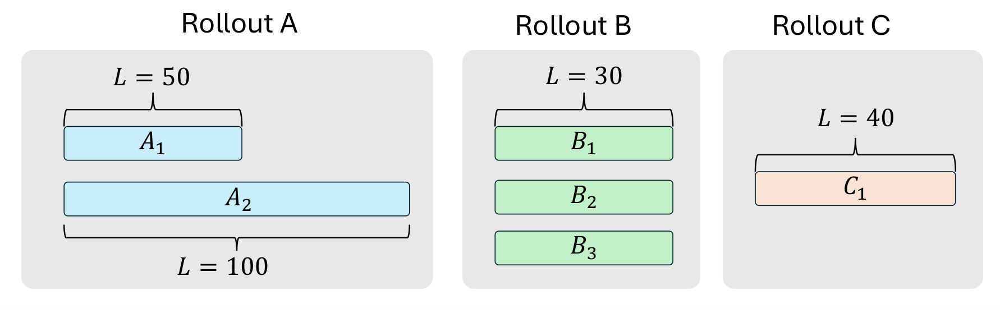
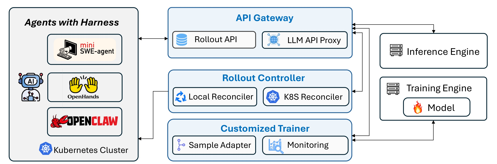
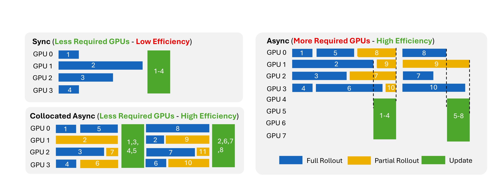
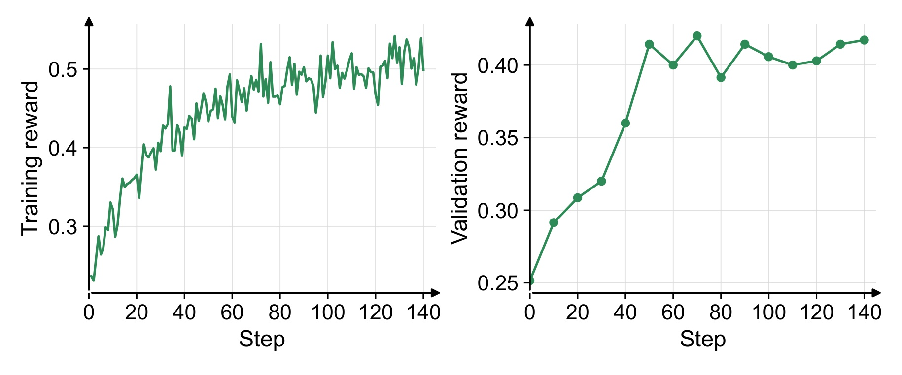
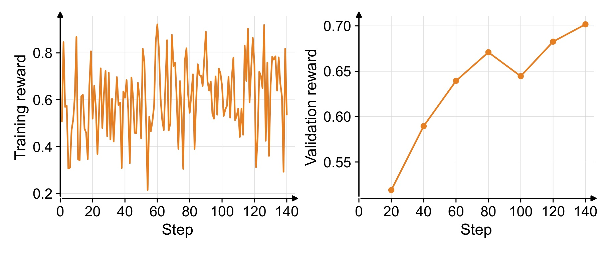
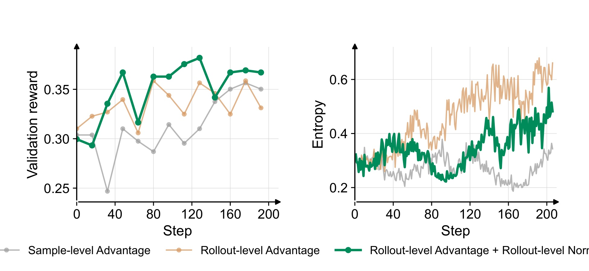
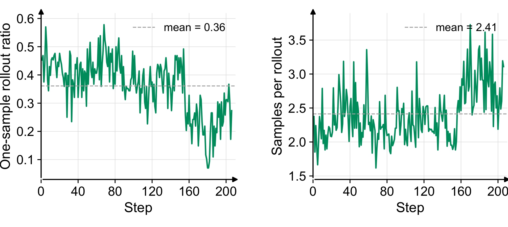

Agent Lightning v1.0：走向 Harness 驱动的 Agent 强化学习
这篇论文讨论的不是又一种面向单轮问答的强化学习算法，而是一个更靠近真实 Agent 部署形态的问题：当 mini-SWE-agent、OpenHands、OpenClaw 一类 agent harness 已经掌管上下文拼装、工具执行、子 Agent 和控制流时，如何在不把整套执行循环重写进训练框架的前提下，用 RL 训练其中的模型。论文由 Microsoft 的 Zhiyuan He 等人完成，合作机构包括复旦大学、浙江大学和爱丁堡大学；论文入口为 arXiv:2608.17528。代码状态已核验：Microsoft 官方 Agent Lightning 仓库 已公开 v1.0 框架、数据清洗与训练脚本。
部署时的 Agent harness 掌握工具、上下文与环境交互循环，而训练端只能看到一串 LLM 请求—响应；如果仍把这些调用当成传统的一条连续 token 轨迹，重分词、动态样本数、优势分配、损失归一化与后端调度都会发生错位，训练可能因此失效或不稳定。
1. 背景和问题
传统 agentic RL 通常让训练引擎直接拥有环境循环：模型产生 action token，环境返回 observation token，下一步 prompt 是旧历史、上一步动作和新观察的连续拼接。这个结构最方便训练，因为一条任务 rollout 天然就是一条线性 token 序列；轨迹属于哪个 prompt group、reward 应该给谁、一个 batch 里怎样平均 loss，都有相对明确的单位。但真实 Agent 产品并不是“模型直接调用环境”。harness 会决定 system prompt、消息模板、工具协议、摘要时机、子 Agent 派生、失败恢复和多轮交接。同一个模型放进不同 harness，看到的上下文和能够执行的动作都可能不同。因此，如果训练阶段绕开部署 harness，模型学到的是另一套交互语义，训练—部署差距并没有真正消失。
Agent Lightning 最初工作的关键动作，是在模型 API 边界上解耦训练与执行：harness 只需把 LLM endpoint 指向代理，训练端便可记录请求、响应 token 和 log probability。这让任意 harness 接入 RL 成为可能，也被 verl Uni-Agent、AReaL 2.0、slime 与 Polar 等后续系统采用。v1.0 进一步指出：“能接上”不等于“训练定义正确”。一旦环境循环归 harness 所有，训练引擎看不到工具调用之间的潜在状态变化，只能看到逐次构造的 prompt-response。子 Agent 会产生分支，context summarization 会替换历史，网络重试还可能制造重复调用；任务层的一条 rollout 因而可能映射成数量不定的训练序列。

Figure 2 左侧的传统结构只有环境是主要潜在状态，模型输入是不断增长的连续 token history，典型 Agent 也接近单一 ReAct 循环。右侧则把 harness 与 environment 共同放进潜在状态：模型每次只收到 harness 单独渲染的 per-call prompt；Agent 形态可以包含多 Agent、子 Agent 和 handoff。图右的表格并非一般性产品对比，而是在回答训练对象是什么：传统路线把“rollout”与“sample”近似等同，harnessed 路线却只能在 API 边界重建训练样本。于是，后续的重分词是否允许合并、一个 reward 怎样分给多条 sample、哪一级做归一化，都会依赖这个结构差异。需要注意，图中两者仍然都可以写成 POMDP；论文不是否认 Markov 建模，而是提醒观测边界和隐藏状态已经改变。
由此产生的第一层问题是正确性。harness 多以文本消息调用模型，而 RL 使用精确 token ID 和 rollout 时的 log probability。相同文本重新套 chat template、decode 后再 tokenize，token 边界都可能变化；若为了节省计算强行把后一次 prompt 里的 token 替换成前一次采样 token，训练所条件化的 prompt 就可能不再是 rollout 时真正消费的 prompt。第二层问题是统计单位。一个成功 rollout 因重分词或分支被切成三条 sample，并不意味着它应该在组内拥有三倍权重。第三层是系统调度：训练前不知道每条 rollout 最终生成多少、生成多长的 sample，但 GPU 拓扑固定，后端仍须在一次 optimizer update 内保留同一 rollout 的统计边界。
这也是论文对大模型工程最有价值的地方。它把“让 Agent 做 RL”从算法口号拆成可核查的接口契约：采样时真实 prompt 必须被保留；reward 与 advantage 的单位必须明确；物理 tensor 展平不能抹掉 rollout provenance；推理和更新阶段的资源切换不能泄露给外部 harness。对于推荐、搜索或广告 Agent，这些原则同样适用：只要线上编排层会重写上下文、调用检索器、生成多分支候选或派生子任务，就不能直接假设一条用户任务对应一条训练序列。论文的贡献因此不是宣称某一种 loss 普遍最优，而是给出一套在 harness 介入后仍保持训练语义一致的最小系统与实验依据。
2. 方法
2.1 从连续轨迹到调用级观测：重分词与安全合并
论文先把训练端真正能看见的对象写成调用序列。对 rollout $\rho$，API 代理记录第 $i$ 次调用的精确 prompt token $p_i$ 与响应 token $a_i$，而不假设相邻 prompt 必然共享完整前缀。隐藏执行状态同时包含 harness 与环境，harness 再从消息上下文渲染模型真实输入；这三层关系可以合写为：
符号解释：$C(\rho)$ 是训练端在服务边界可见的调用记录，$T_\rho$ 是调用数，$p_i/a_i$ 是第 $i$ 次请求与真实采样响应；$s_t^{\mathrm{harness}}$ 包括消息、控制流、子 Agent 和摘要状态，$s_t^{\mathrm{env}}$ 是代码仓、沙箱或搜索环境状态；$C_t^{\mathrm{msg}}$ 是 harness 构造的消息上下文，$\operatorname{Template}$ 与 $\operatorname{Tok}$ 表示模板渲染和分词；$z_t$ 是调用级 transition，$\pi_\theta$ 是策略。这个定义刻意不把工具状态转移伪装成可见 token；训练正确性的底线，是 action 必须在它实际采样时的 $p_t^{\mathrm{tok}}$ 条件下计算。
文本层通常能看到上一轮完整出现在下一轮 prompt 中；安全合并却要求更强的 token 条件，而重新解码和分词甚至可能改变原动作 token：
符号解释：$\preceq$ 表示精确前缀；上标 text 与 tok 分别表示文本和 token 序列；$\operatorname{Decode}$ 把原始采样 token 变回文本，$\operatorname{Tok}$ 再次分词。第一行在多轮消息里经常成立，第二行才是合并所需条件，第三行说明两者不能互推：语义和文本可保持不变，token ID 与边界却不同。完整历史重新渲染时 chat template 还可能增删连接符，工具调用解析器也会修复 JSON、归一化空格或重新序列化。

Figure 3 用 having 展示最小失败例：第 $i$ 次响应将它采样成 h 与 aving，下一次完整消息重分词后却得到 hav 与 ing。左侧标签说明两行对应原始采样和 $p_{i+1}$ 的朴素重分词；右侧红色不等式指出新 prompt 内那段 token 已不等于原动作 token。这里没有语言内容变化，失败纯粹来自 tokenizer 边界，因此不能靠文本相等判断安全。对长程 Agent，这类差异会累积：前缀越长，共享计算越值得复用，但任何错误 stitching 又会把后续 action 放到没有真实采样过的 prompt 下优化。图也解释了为什么论文把 retokenization 看作算法正确性问题，而不只是数据预处理细节。
现有框架有四种取舍。逐调用独立训练最稳妥，却重复计算长 prompt；request buffer 可把后续 prompt 中对应旧响应的 token 替换为原采样 token，提高合并率，但若实际下一 prompt 含重构 token $\hat a_i$，替换会形成另一条 stitched prompt：
符号解释：$\parallel$ 是拼接；$\hat a_i^{\mathrm{tok}}$ 是下一 prompt 实际包含的重构 token；$\Delta_{i+1}$ 是新消息后缀；$\tilde p$ 是替换后的 prompt。响应 $a_{i+1}$ 原本在 $p_{i+1}$ 下采样，却被放在 $\tilde p_{i+1}$ 下训练，形成 off-policy 偏差。树结构 attention 能共享精确公共前缀并保留分支因果性，但要求定制 mask、kernel 与分布式梯度处理。Agent Lightning v1.0 选择 best-effort 合并：只有精确 token 前缀条件成立才追加 suffix，否则关闭当前序列并新开一条。它接受较低合并率来换取标准 dense causal kernel 与 rollout prompt 的忠实性。
2.2 rollout 级统计：优势、归一化与批处理不变量
安全合并之后，一条 rollout 会得到动态数量 $N_\rho$ 的训练样本。论文首先问 advantage 的 baseline 应按 rollout 还是 sample 计算。若同一 prompt group 有两条 rollout，reward 分别为 1 与 0，第一条因分裂得到三条 sample、第二条只有一条，那么 rollout-level baseline 是 $(1+0)/2=1/2$，sample-level baseline 却变成 $(1+1+1+0)/4=3/4$。后者让 tokenizer 偶然分裂、子 Agent 数量或摘要行为改变组统计，等价于 harness 内部实现拥有了未经设计的 credit 权重。因此 v1.0 在 rollout 级计算 baseline 与 advantage，再把任务结果赋给该 rollout 所属样本。

Figure 4 左边是一条 rollout 对应一条 sample 的传统情况，右边则把 reward=1 的 Rollout 1 展开成 Sample 1–3，而 reward=0 的 Rollout 2 只产生 Sample 4。大括号明确三条 sample 仍属于同一个任务结果，并不是三次独立成功。按 sample 统计会把 reward=1 重复计三次，导致 baseline 上移，也会改变两个 rollout 的 advantage 幅度；按 rollout 统计则对拆分不敏感。这个例子还揭示论文没有解决的部分：所有样本继承相同 outcome reward 是粗粒度 credit assignment，无法判断某个子 Agent 或某段调用究竟贡献了什么。作者只主张 rollout-level 是较稳妥的当前选择，并把跨样本细粒度归因留给未来工作。
loss normalization 也有同一单位问题。设 batch 有 $R$ 条 rollout，第 $\rho$ 条产生 $N_\rho$ 个样本，样本 $j$ 有 $L_{\rho,j}$ 个响应 token，逐 token loss 为 $\ell_{\rho,j,t}$。论文把全局 token 等权、sample 等权与 rollout 等权三种目标并列为：
符号解释：$R$ 是 rollout 数，$N_\rho$ 是动态样本数，$L_{\rho,j}$ 是响应长度。第一式让每个 token 等权，长序列权重大；第二式先在 sample 内平均再让每条 sample 等权，因此 rollout 切得越碎，总权重越大；第三式先汇聚同一 rollout 的 token，再让 $R$ 条 rollout 等权。Agent Lightning 采用第三式，它消除了样本拆分造成的权重变化，也比全局 token-mean 更少受一批超长负样本支配。作者认为第一式与第三式理论上都比 sample 等权合理，但实验中第一式在长负序列多时后期不稳。

Figure 5 把三种归一化映射到一个具体 batch。Rollout A 有长度 50 和 100 的 A1/A2，Rollout B 有三条长度 30 的 B1–B3，Rollout C 只有长度 40 的 C1。全局 token-mean 主要受 A 的 150 个 token 影响；seq-mean 会让 B 因拥有三条 sample 而得到一半样本席位；rollout-mean 则先在 A、B、C 内分别汇总，再各占三分之一。图中灰框代表真正应保持的任务单位，彩色条只表示后端物理样本。如果 B 的三条 sample 只是一次 context summarization 造成的拆分，它不应因此比 C 多三倍统计权重。与此同时，rollout-mean 仍会在 rollout 内按 token 聚合，所以不是完全忽略长度，而是把长度影响限制在同一任务轨迹内部。物理 batch 可以展平，但统计 provenance 不能丢，论文把训练集合继续写为：
符号解释：$S_{\rho,j}$ 是构造后的第 $j$ 条序列；$\rho$ 保留 rollout ID；$g_\rho$ 是从同一 prompt 采样的 rollout group；$\mathcal{B}_{\mathrm{rollout}}$ 是本轮任务集合。展平只改变 tensor 形状，不能改变 advantage group 和 rollout 权重。同一 rollout 的序列还应落在同一个 optimizer update 中，否则各部分可能用不同 policy version 更新，产生 within-rollout policy skew。动态 packing 若只追求 GPU 均衡而跨 update 拆散 rollout，会在系统层重新破坏前面维护的算法边界。
2.3 三组件控制平面：Gateway、Controller 与 Trainer
正确的样本适配仍需要一个能跨进程、跨集群承载 rollout 生命周期的控制面。v1.0 用三个责任清楚的组件实现。API Gateway 是 rollout、model 和 event 的事实源：trainer 创建带唯一 ID 的 rollout，注册模型推理端点；harness 通过包含 rollout ID 的 OpenAI-compatible proxy 调用模型；Gateway 记录 prompt token、response token、log probability 的 model_request event，以及最终 reward 和用户事件。Rollout Controller 从 Gateway 轮询 queued/running 状态，用 K8s Reconciler 创建和 watch Kubernetes Job，也可用 Local Reconciler 启动本地进程。Gateway 状态是 ground truth，网络延迟时执行状态可能暂时落后，控制器靠下轮同步达到 best-effort eventual consistency。

Figure 1 从左到右展示训练真正跨越的边界。左侧 Agents with Harness 可运行 mini-SWE-agent、OpenHands 或 OpenClaw，并位于独立 Kubernetes 集群；中间 API Gateway 同时提供 Rollout API 与 LLM API Proxy，Rollout Controller 下含 Local/K8s Reconciler，Customized Trainer 下含 Sample Adapter 与 Monitoring；右侧才是 Inference Engine 和带模型的 Training Engine。箭头说明 harness 不需要嵌进 trainer：它只经 proxy 请求模型，Controller 负责执行生命周期，Trainer 等待 rollout 完成后读事件并组装样本。这个职责分离也让执行 CPU/沙箱资源与训练 GPU 独立扩缩。需要克制理解“约 3,500 行代码”：它说明核心框架紧凑，不包含 Kubernetes、VERL、推理引擎和各 harness 的完整依赖复杂度。
Customized Trainer 建在 VERL 上，训练步先为当前 batch 注册 rollout，等待 Controller 推进到终态，再拉取 model_request 和 reward event。Dedicated Sample Adapter 落实三项核心选择：只在精确 token 前缀成立时合并；在 rollout 级计算 advantage；以 rollout-level token-mean 归一化。Trajectory Monitoring 以 rollout ID 串起输入、状态、模型调用、reward、token/turn 统计、自定义事件和 Kubernetes 日志，允许人工或 AI Agent 查 reward hacking、失控轨迹与静默网络错误。控制面与数据面分开后，异常诊断也不再依赖某个训练 worker 的临时内存。
2.4 共置异步训练与工程可靠性
标准同步 RL 必须等 batch 最慢 rollout 结束才更新，Agent 任务时长方差大时 GPU 空转明显；完全异步把 rollout 与 update 放到两套 GPU 池，吞吐高却增加资源门槛和双队列复杂度。Agent Lightning 的 collocated async 让同一 GPU 池分时承担推理和更新：收集到足够 rollout 后，Gateway 停止接纳新请求并等待在途请求结束，更新阶段到来的新请求被暂停，系统回到 rollout 阶段后再继续。harness 只看到请求暂缓，不需要知道模型正处在哪个 phase。这项设计把“异步”放在任务完成顺序上，而不是让推理和更新永远占用不同硬件。
跨服务网络失败则用两套不同语义处理。rollout API 的 create、status update 和 event append 被设计为幂等，调用方可以重试而不重复改变状态；LLM generation 本身无法幂等，因为重试可能采样出另一响应。Trainer 在组装样本时对相同 prompt 的 model_request event 去重，只保留最后一次、丢弃早先的重试或被替代调用。这是一种实用规则，但相同 prompt 在少数任务中也可能是 Agent 有意再次采样，工程实现需要结合 attempt ID 和调用语义检查误删风险。执行侧采用自托管 Kubernetes Job，而不是把 Modal、veFaas、E2B 等商业 sandbox 作为硬依赖，降低大规模 rollout 的持续费用并保留完整开源链路；代价是团队要自己承担镜像、配额、网络策略、Job 回收与集群安全。Monitoring 因此不是装饰：coding 训练中发现的通过 Git 历史、wget/curl、pip 或 urllib 取得参考源码的 reward hacking，正说明只看标量 reward 会把环境漏洞误当成能力提升。v1.0 把这些现象放进 rollout 事件和 pod 日志，形成从异常 reward 回溯到具体工具行为的诊断路径。
3. 实验结果
3.1 系统效率与评测口径
论文在三类任务上验证框架：搜索 Agent、通用指令执行 Agent 和 coding Agent。前三者的共同目标不是建立统一 leaderboard，而是检查同一 proxy/control-plane/sample-adapter 能否连接不同 harness、模型、优化器与环境。系统层报告 collocated async 相对同步 RL 约有 2× 端到端加速，同时比使用独立 rollout/update GPU 池的异步方案需要更少 GPU。这个数字是作者在其设置下的系统测量，论文没有给出足够细的硬件型号、rollout 长度分布、置信区间和成本分解，适合视为设计可行性证据，而不是可直接迁移到任意集群的固定倍率。

Figure 6 上左的 Sync 只用 4 张 GPU，但 rollout 1–4 完成时间不同，update 必须等最慢任务，白色间隙代表空转。上右的 Async 用 8 张 GPU：一组持续 rollout、另一组更新，利用率高却加倍占用资源。下左的 Collocated Async 仍用 4 张 GPU，先异步收集已经完成的 full/partial rollout，再把同一批 GPU 切到绿色 update；未完成任务可在之后继续，因此不被最慢 rollout 锁死。蓝色、黄色和绿色块分别是完整 rollout、部分 rollout 和更新。图证明的核心是调度机制能够同时减少 barrier 等待与专用 update 池，而不是每个色块都对应相同任务成本；真实收益仍会随推理/更新比例、请求暂停时间和模型权重切换开销变化。
3.2 搜索与通用指令 Agent
搜索实验复用 Search-R1 设置，以 Llama-3.2-3B-Instruct 为策略、GRPO 为优化器，在 HotpotQA 训练。验证从 HotpotQA、2WikiMultiHopQA、MuSiQue、Bamboogle、TriviaQA、Natural Questions 各抽 50 例，用 exact match 作为 reward；训练 batch size 为 512，每个 prompt 采样 4 条 rollout，每 10 步验证。验证 reward 从 25.1% 提升到 41.7%，绝对增加 16.6 个百分点。这个设置同时包含同域与跨数据集问题，但每集合 50 例规模较小，曲线点变化不能替代更完整的显著性报告。

Figure 7 左图的训练奖励从约 0.25 持续上升，在后半段接近 0.5，仍带有 rollout 采样噪声；右图验证奖励则从 0.251 起步，在约 50 步跃升到 0.41 附近，此后在 0.39–0.42 间波动，终点为论文报告的 41.7%。两条曲线方向一致，说明提升并非只发生在训练 batch，但验证曲线并非单调，约 70、90、110 步附近都有回落。图能支持“框架成功训练了带搜索工具的 Agent”，不能单独证明 rollout-level normalization 对这项提升的独立贡献，因为这里没有对应的 sample-level 对照消融。
通用指令实验复用 LLM-in-Sandbox harness，以 Qwen3-4B-Instruct-2507 为策略、RLOO 为优化器，在 Instruction Pre-Training 数据上按 80%/20% 划分训练和评测。Agent 可在计算机沙箱访问外部资源、管理文件与执行代码；batch size 8，每个 prompt 采样 8 条 rollout，每 20 步验证。验证 reward 从 51.9% 提升到 70.2%，绝对增加 18.3 个百分点。较小 batch 和任务多样性让训练 reward 噪声显著高于搜索实验。

Figure 8 左图的橙色训练奖励在约 0.2–0.9 之间剧烈摆动，单步下降并不意味着模型整体退化；右图按较稀的验证间隔显示，reward 从约 0.52 逐步升到 0.70，中途在约 100 步从 0.67 回落到 0.645，随后恢复。训练与验证的形态差异提醒读者：harnessed RL 的任务结果本来就高方差，不能依靠最近几个 training batch 做早停判断。该实验更有力的证据是同一轻量框架可接入另一套 harness、另一种优化器和沙箱任务；但论文仍未给出与其他 harnessed RL 框架在相同硬件、相同任务上的正面对比。图中也没有误差带或多随机种子区间，因此 18.3 个百分点应读成这次运行的起止差，而不是已建立稳定方差界的期望提升。
3.3 coding 数据清洗与 reward hacking 防护
coding 实验采用 Qwen3.5-9B、mini-SWE-agent 与 SWE-smith。原始 59,136 条软件工程任务来自 128 个 Python 仓库；作者发现其中 18,033 条 problem statement 为空、1,265 条对应 problem branch 在 Docker 镜像中缺失，部分任务还需运行数千测试。预处理先剔除空问题、缺 branch 和超过 200 个测试的任务，再用 Qwen3.5-9B 对每个候选四次 rollout：四次全成功的过易任务被删除，成功与失败并存的约 5,000 条保留，并额外抽取 1,000 条四次全失败任务以避免集合过易，最终约 6,000 train 和 400 test。这个筛选把训练信号集中在当前模型决策边界附近，但也意味着数据难度相对 Qwen3.5-9B 定义，换模型后可能需要重新校准。
reward hacking 检查发现四种直接获取参考源码的路径：查 Git history 找 gold commit；用 wget/curl 拉 GitHub 上游；用 pip 下载包源码；用 urllib 等 Python 网络库绕过命令限制。作者禁用 Git 命令并隐藏 .git，同时用 Kubernetes network policy 阻断一般外网，仅放行白名单服务。这样 reward 更接近“依据问题描述和本地仓库修复代码”，而不是“找到标准答案”。这一防护对实验可信度十分关键，也暴露可复现边界：网络白名单、基础镜像缓存和包源若不一致，都可能改变 Agent 能拿到的信息，导致同一训练脚本得到不同 reward 语义。
3.4 coding 训练：统计选择、合并行为与最终结果
作者在相同 GRPO 主目标下比较三种设置：Sample-level Advantage 搭配全局 token-mean；只把 advantage 改成 rollout level、loss 仍为 token-mean；以及同时采用 rollout-level advantage 和 rollout-level normalization。最后一项在 step 128 的 test validation reward 达 38.2%，高于 sample-level baseline 的 35.0%，也高于只修 advantage 的 33.1%。这说明单独改变 advantage 并未自动改善结果，统计单位需要和 loss 权重一起匹配；论文还观察到最终组合的 policy entropy 增长更慢、更稳定。

Figure 9 左图三条曲线并非“绿色始终领先”：早期灰色和橙色在个别 step 也能接近或超过绿色，真正差异体现在绿色取得更高峰值且后段保持约 0.36–0.37。右图更能解释机制：只改 rollout advantage 的橙色 entropy 后期升到约 0.65，sample-level 灰色较低但 validation 上限不足；同时使用 rollout norm 的绿色先下降、再缓慢回升，到 step 200 仍明显低于橙色。作者据此推断 normalization 抑制了修正 advantage 后的 entropy 膨胀。证据是相关消融而非严格因果隔离：没有多随机种子误差带，也未展示 KL、gradient norm 和每种序列长度分桶，因此“更稳定”的范围应限定在这条训练曲线。
真实训练还验证了动态样本数不是理论边角。best-effort 合并只在精确 token 前缀匹配时工作，coding trajectory 又包含长上下文和 harness 行为；平均只有 36% rollout 能完整合成一条训练样本，每条 rollout 平均产生 2.41 条样本。也就是说，多数任务都会进入 rollout 级 advantage、normalization 和 packing 逻辑，若仍按 sample 等权，偏差会系统性出现。

Figure 10 左图是一条 rollout 最终只产生一条 sample 的比例，虚线均值 0.36；前 140 步常在 0.35–0.5，约 160 步后明显下降，最低接近 0.1，说明训练过程中合并率还会随策略轨迹变化。右图每 rollout 样本数的均值为 2.41，前中期多在 2 左右，约 160 步后升到 3 以上并剧烈波动。两图呈大致反向关系，但并不是简单倒数，因为多样本 rollout 可产生 2 条或更多。它们支持一个重要工程结论：batch shape 和统计权重不能在提交 prompt 时预先固定；后端必须等执行与样本构造完成，同时保留 rollout ID，才能做正确调度和归一化。
最终采用 rollout-level advantage + rollout-level norm 的 checkpoint 在 step 208 将 Qwen3.5-9B 的 SWE-bench Verified 从 41.8% 提升到 56.4%，绝对提升 14.6 个百分点。论文强调只使用约 6K 训练样本和“适度算力”，并公开清洗与训练脚本，这是很有价值的可复现起点；但 41.8%→56.4% 只属于指定 base model、mini-SWE-agent、数据流水线与评测环境，不能外推为所有 coding harness 都有同等收益。综合三类实验，证据最充分的是“框架能跑通不同 harness 且 coding 统计选择有可见影响”，较弱的是跨框架系统效率、公平硬件成本和多种模型规模的普适性。
4. 总结
4.1 我的判断
Agent Lightning v1.0 最值得保留的观点，是把 rollout 当作任务与统计单位，把 sample 当作动态物理载体。harnessed RL 的复杂性不是多了一个代理服务，而是环境循环所有权改变后，真实 prompt、reward 归属、loss 权重和 GPU 调度必须共同维护同一 provenance。best-effort 合并看起来保守，却明确拒绝为了计算复用改写 rollout prompt；rollout-level advantage 与 normalization 也不是新奇数学目标，而是防止 tokenizer、摘要和子 Agent 数量意外控制梯度权重。约 3,500 行控制面让这些选择可读、可替换，是论文作为研究 testbed 的主要价值。
对推荐与搜索系统，迁移点并非直接把 SWE-bench 配方复制到排序。更现实的用法是训练会调用召回器、搜索器、重排器或内容工具的 LLM Agent：一次用户任务可能触发多次模型调用、生成多个候选分支，线上编排层还会裁剪或摘要上下文。此时应记录每次真实请求 token、任务级 reward、分支所属 rollout 与 group；离线训练必须检查 sample 拆分是否改变优势和 loss 权重。对于带延迟、成本或用户满意度的复合 reward，还需要比“每个 sample 继承同一标量”更细的 credit assignment。
4.2 局限与风险
- 算法证据范围有限。 关键统计消融集中在一条 coding-agent 训练设置，缺少多随机种子、误差带、不同模型规模和多种 harness 的同配置复验。
- 系统效率口径不完整。 约 2× 加速没有充分披露硬件、请求长度、权重切换、暂停队列和网络开销，无法直接推算生产集群成本。
- reward 仍是粗粒度。 同一 rollout 的多个 sample 继承任务 reward，避免了拆分权重偏差，却没有解决子 Agent、工具调用和长轨迹内部的因果归因。
- best-effort 合并存在计算浪费。 它维护 prompt 正确性，但 retokenization、摘要或分支越多，重复前缀计算越严重；树结构训练的复杂度只是被推迟，并未消失。
- 安全边界依赖环境治理。 隐藏 .git 和限制网络能堵住已发现的作弊路径，但包缓存、预装源码、测试泄漏与白名单服务仍可能成为旁路。
- 控制面只保证最终一致性。 Gateway、Controller 与 Job 状态在网络故障期间可能短暂分歧，重复生成去重规则还可能误伤有意的同 prompt 重采样。
4.3 工程复现与后续跟进
- 先复现实验日志而不只复现终分数：逐 step 记录 $N_\rho$、单样本 rollout 比例、序列长度分布、entropy、KL 与 gradient norm，确认 Figure 9 的稳定性解释能在不同随机种子下成立。
- 对 sample adapter 做性质测试：构造 chat template 非可组合、decode-retokenize 漂移、tool JSON 重写、context summarization 和子 Agent 分支案例，验证只有精确 token 前缀才合并，且 loss 始终条件化于真实 rollout prompt。
- 增加同硬件基准，把 sync、分离 async、collocated async 在相同任务、并发和模型下比较吞吐、GPU-hours、暂停等待与失败重试开销，确定约 2× 增益来自哪里。
- 在搜索/推荐 Agent 上尝试分层 credit：保留 task-level rollout baseline，同时为检索质量、工具成本、重排命中和最终满意度建立可审计子奖励，检查细粒度信号是否破坏 rollout 等权原则。
- 持续跟踪官方仓库的数据清洗脚本、SWE-bench 复现 issue 与其他训练后端适配。论文当前最大优势是完整链路可读；只有外部复现能确认 56.4% 及统计选择不依赖隐藏环境细节。
总体而言，这篇论文没有证明 harnessed agentic RL 已经被完全解决，却把最容易被“跑通 demo”掩盖的训练语义问题摆到了台面上：模型到底在什么 prompt 下采样、一个任务为什么变成多条样本、谁应该拥有梯度权重，以及固定 GPU 后端如何不破坏这些边界。对正在把 Agent 从推理编排推向持续后训练的团队，这套问题清单与轻量实现，比单一 benchmark 涨点更有长期参考价值。